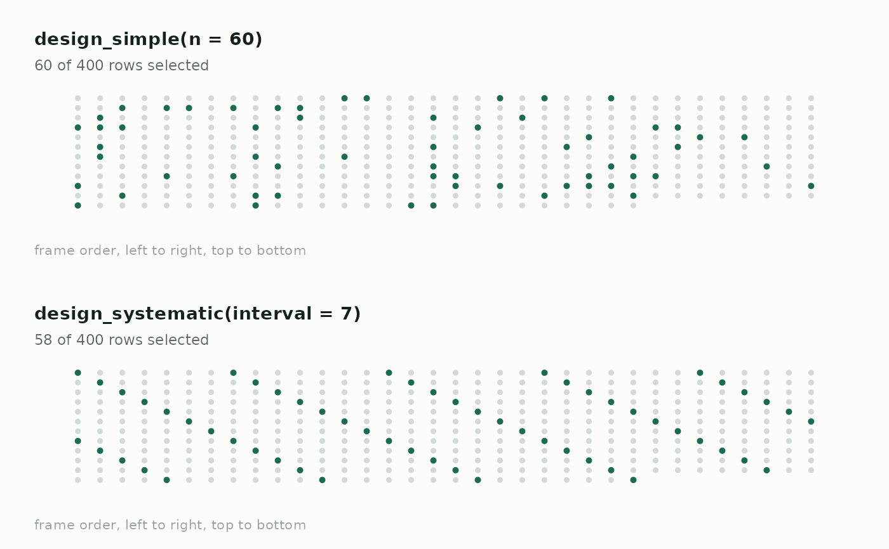
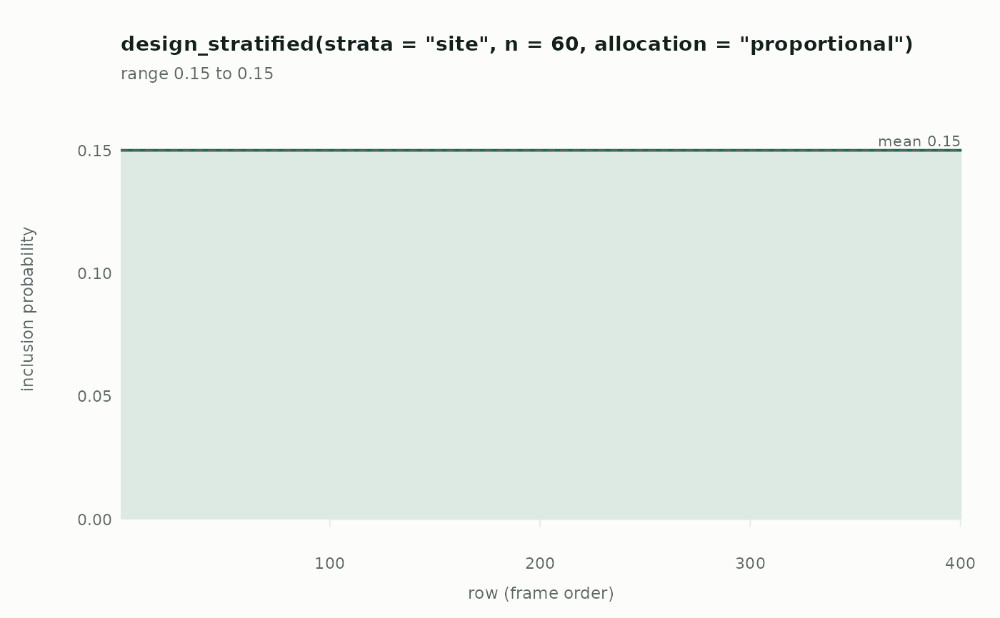

Draws the design against a population so you can see what it selects. Two views, and each answers a question that a table answers slowly:
Arguments
- x
A design object.
- y
The population data frame to draw against.
- type
"selection","probability"or"map".- seed
Optional seed for the
"selection"draw, so the picture is reproducible.- ncol
Dots per row in the
"selection"grid. Defaults to whatever fills the panel at its current aspect ratio.- max_dots
The most dots or steps to draw, which keeps them visible. A larger frame is shown in runs of consecutive rows: in
"selection"a dot stands for a run and is filled when any row in it is selected, and in"probability"a step spans the lowest and highest probability in its run."map"draws every selected row and at mostmax_dotsof the others, evenly spaced through the frame. The counts under the title cover the whole frame.- main
Title, a single string, or one expression, a call or a name such as
quote(alpha)drawn as plotmath. Defaults to a description of the design: its constructor and the arguments that differ from their defaults.- palette
Named list, or named character vector, of colours overriding any of
surface,ink,secondary,muted,recessive,accent,fill,rule. Each entry is one colour, a name fromgrDevices::colors()or a code such as"#1B6B52". Other names are refused.- coords
For
type = "map", the two columns to place rows by,c(x, y), or one POINT geometry column. Defaults to the design's ownacross(design_spread()) orcoords(design_spatial()); required for any other design. Date and date-time columns get date axes.- sub
A single string, added to the end of the line under the title, after the counts the plot puts there.
- ...
Graphical parameters for the call that sets up the panel, such as
xlim,ylim,asporlog. They replace the plot's own:asp = 1gives any map the same scale on both axes, andxlimandylimzoom in, with the rules and the mean line of"probability"following them. Axes and labels drawn by base graphics are off (axes = FALSE,ann = FALSE) unless turned on here. The dots, steps and titles keep their own look, socol,cexandpchhere change nothing visible; their colours come frompalette. A name that is not a graphical parameter is refused.
Details
"selection"Every row of the frame as a dot, in frame order, with the selected ones filled in. Designs look distinct: simple random sampling scatters, systematic makes a lattice, cluster sampling takes solid contiguous runs, and probability-proportional-to-size thickens wherever the weight is large. If your frame is sorted by something meaningful, an unintended pattern shows up immediately. A design that samples with replacement rings each row it drew more than once, and the count under the title gives the draws and the distinct rows. A bootstrap is shown by its first replicate.
"probability"Each row's inclusion probability across the frame, as a step, with frame rows along the axis. Flat means every row had the same chance; plateaus mean strata; a rise means size-proportional selection. Rows the design can never reach sit at zero and are marked, which is usually the thing worth finding out. The count of those rows, the count taken with certainty, the range and the mean cover every row of the frame.
"map"Every row placed by two columns — coordinates, or any two numeric variables — with the selected ones filled in. This is the view for
design_spread()anddesign_spatial(), where what matters is how evenly the sample covers the space: compare a simple random sample's clumps and gaps against a spread one. Fordesign_spatial()the outline ofregionis drawn as well, with each edge of a longitude/latitude region following its great circle under spherical geometry, which is how the design decides which rows are inside. The coordinates ofdesign_spatial(), and those ofdesign_spread()withscale = FALSE, get the same scale on both axes (asp = 1, or1 / cos()of the middle latitude for longitude and latitude), so the map shows the distances the design works with; other columns fill the panel. Whenacrossnames more than two columns, the first two place the rows. The line under the title names the columns left out, counts the selected rows that have no position and so are not drawn, and says when the background is thinned.
A design with reserve is shown by its main sample, without the reserves.
Base graphics, so there is no plotting dependency to install.
Examples
pop <- data.frame(
id = 1:400,
site = rep(c("a", "b", "c", "d"), times = c(200, 100, 60, 40)),
cl = rep(paste0("c", 1:40), each = 10)
)
op <- par(mfrow = c(2, 1))
# Scattered, versus a visible lattice
plot(design_simple(n = 60), pop, seed = 1)
plot(design_systematic(interval = 7), pop, seed = 1)

par(op)
# Where the probabilities sit
plot(design_stratified("site", n = 60), pop, type = "probability")
